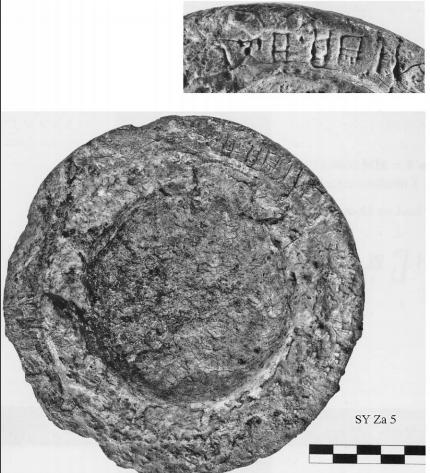

-
SYZa5
Names
SYZa5, SY Za 5
Support
Stone vessel
Location
Syme
Findspot
Unavailable

Scribe
Unavailable
Context
Unavailable
Dimensions
Catalogue
Readings
1 1 0 MI none
1 1 0 JA none
1 1 1 *900 none
1 1 2 JA none
1 1 2 WA none
1 1 2 PA₃ none
𐘻𐘱𐄁𐘱𐘮𐘰
MIJA*900JAWAPA₃
𐘻𐘱𐄁𐘱𐘮𐘰
MIJA*900JAWAPA₃
SY Za 5
(HM 5587) (ArchEph 2008, 198, 208-9), circular
serpentine Libation Table (south part of the site, east of the
Hellenistic-Roman shrine C-D; H. ca. 8.8, D. ca. 13.5). The inscription is
written on the top of the rim, oriented to the interior.
]-MI-JA • JA-WA-PA
3
-[
about 10 cm to the left of the visible
inscription are the traces of 2 or 3 signs, the first of which may be
A
.
Commentary © John Younger
References